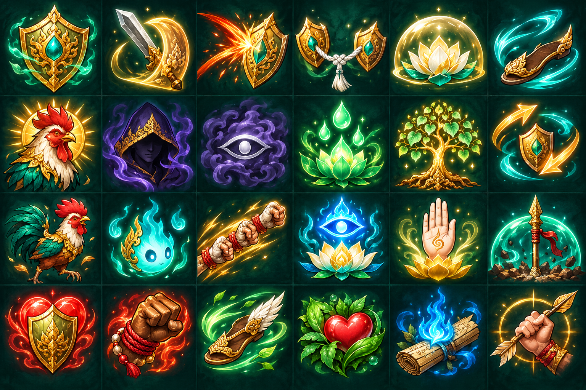
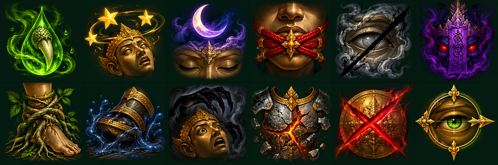

← กลับดู Auto และหน้าอัปสกิลบัฟ 24 แบบ · ดีบัฟ 12 แบบ
ภาพวาดใหม่เข้าชุดกับสกิลอโยธยา ดูตัวอย่างขนาด 24 และ 36 px ใต้ภาพแต่ละช่อง ในเกมแสดงเฉพาะสถานะที่ทำงานจริง ส่วนบัฟจากสกิลร่างใหม่เตรียมภาพไว้สำหรับเชื่อมระบบภายหลัง
บัฟและเอฟเฟกต์สนับสนุน
ดีบัฟ
ชีตภาพบัฟต้นฉบับ

ชีตภาพดีบัฟต้นฉบับ

Prompt ที่ใช้สร้างภาพ